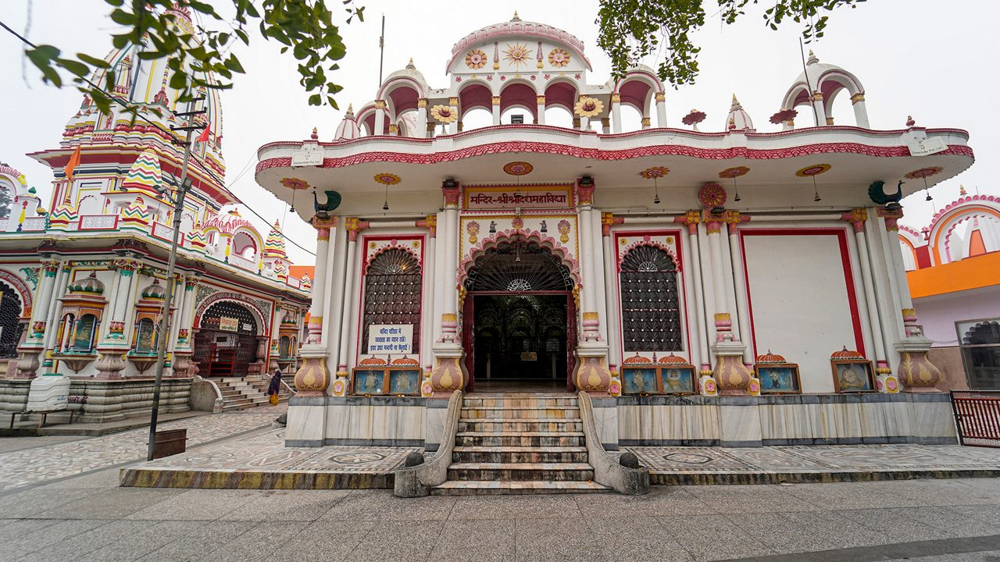
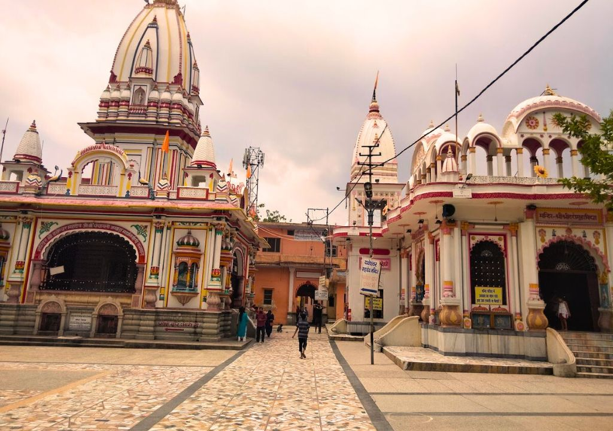
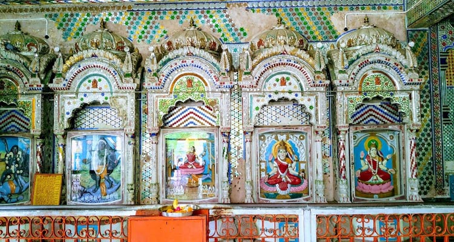
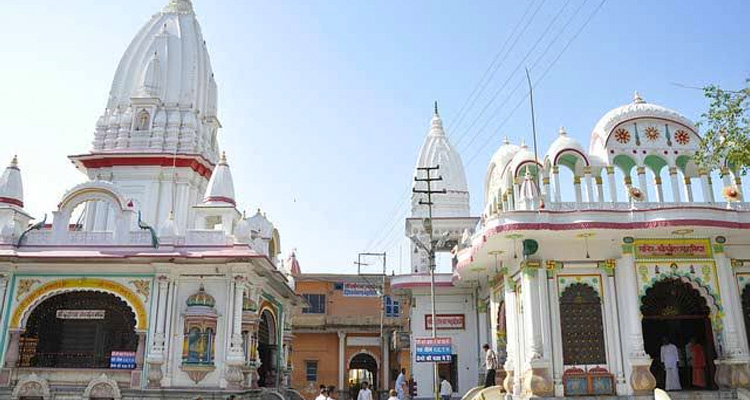

Daksheshwar Mahadev Temple (also known as Daksha Mahadev Temple or Daksh Prajapati Temple) is one of the most ancient and mythologically significant Shiva temples in Haridwar, Uttarakhand. Located in the serene town of Kankhal, about 4 km south of central Haridwar along the banks of the holy Ganges, this sacred site is deeply tied to the legend of Daksha Prajapati — the father of Goddess Sati and a powerful progenitor in Hindu mythology. According to Puranic stories, Daksha performed a grand yajna (fire sacrifice) here, where he insulted Lord Shiva by not inviting him, leading to Sati's self-immolation in the yajna kund out of grief and devotion. This event marked the origin of Shakti Peethas (as Sati's body parts fell at various places) and Shiva's wrathful Tandava. The temple, with its ancient Shiv Linga and the preserved Yagna Kund (sacrificial fire pit), stands as a poignant reminder of devotion, sacrifice, and divine reconciliation — a place where Lord Shiva is worshipped as Daksheshwar Mahadev, the forgiving lord who ultimately blessed Daksha.
The temple complex exudes profound peace amid lush surroundings near the Ganges, with intricate carvings, a peaceful sanctum, and the historic Sati Kund nearby symbolizing her sacrifice. It is one of the five most holy places in Haridwar and attracts countless devotees, especially during the holy month of Sawan (Shravan), Maha Shivaratri, and Navratri, when special abhisheks, aartis, and rituals fill the air with devotion. The site's spiritual energy — blending tragedy, redemption, and eternal Shiva bhakti — makes it a must-visit for those seeking blessings for forgiveness, family harmony, and inner strength. Surrounded by the sacred flow of the Ganga, Daksheshwar Mahadev offers a quiet yet powerful connection to ancient legends and the timeless grace of the destroyer who is also the ultimate protector.
October to March for pleasant, cool weather and comfortable exploration; peak devotion during Sawan (July–August) for Kanwar Yatra and Shivling abhishek, Maha Shivaratri (February/March), and Navratri with vibrant rituals. Temple open daily ~6:00 AM to 7:00–8:00 PM (varies seasonally). Early mornings offer serene darshan and fewer crowds; evenings provide peaceful aarti by the Ganges. Avoid heavy monsoon peaks for easier travel, though Sawan crowds bring special energy.
Ancient Shiv Linga darshan at the main sanctum, historic Yagna Kund (site of Daksha's sacrifice), nearby Sati Kund for reflection on the legend, special abhishek and aarti during Sawan/Shivaratri, peaceful Ganges views, and mythological significance as a center of Shiva devotion — perfect for prayer, seeking forgiveness/blessings, photography of the serene complex, and experiencing the profound energy of redemption and divine love.
Reach by auto/rickshaw/taxi from Haridwar (4 km, easy and affordable), wear modest clothing and remove shoes in temple area, perform abhishek if possible (bring milk/bel leaves), maintain silence and respect the sanctity, carry water/snacks (basic facilities nearby), be cautious during peak Sawan crowds, combine with nearby attractions like Har Ki Pauri or Maya Devi Temple for a fuller Haridwar experience, and embrace the site's deep mythological aura for a meaningful visit.
"At Daksheshwar Mahadev, where the flames of an ancient yajna once burned with pride and pain, Shiva's grace turned sorrow into surrender. Here, by the eternal Ganga, every devotee finds not judgment, but forgiveness — a silent reminder that even the greatest errors dissolve in the compassionate gaze of the one who is both destroyer and redeemer."